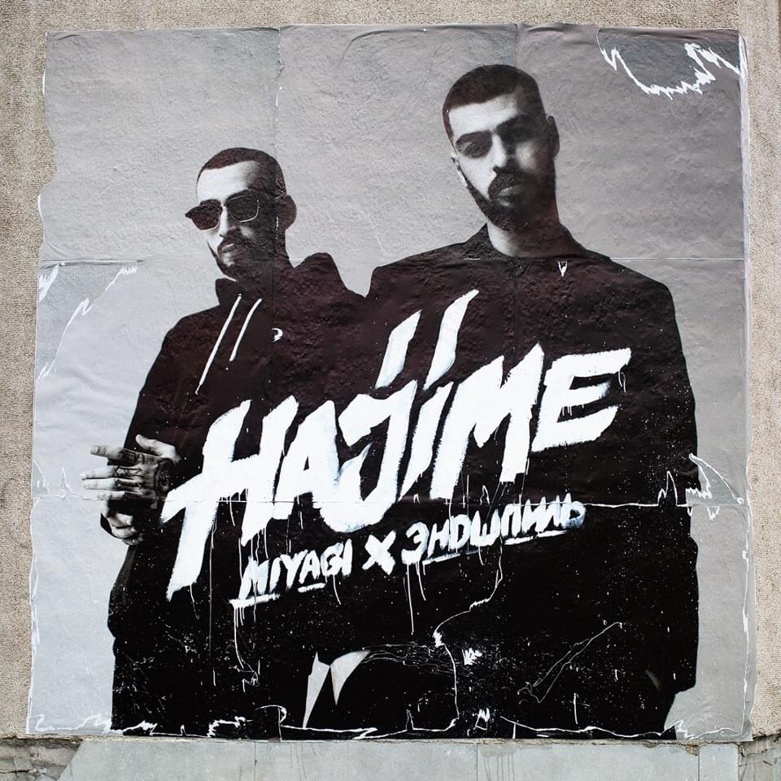
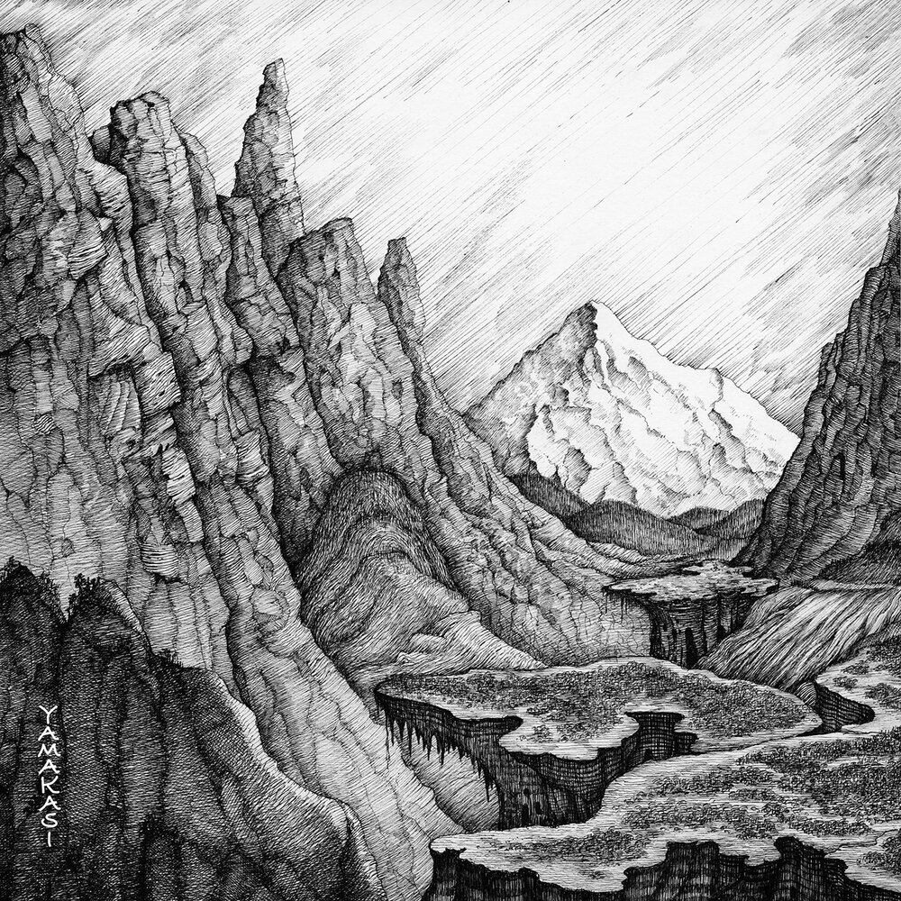

Исполнители:
Miyagi & Andy Panda, Мияги, Andy PandaДата выпуска:
8 мая 2016 г.Звукозаписывающая компания:
Hajime RecordsЖанр:
Хип-хоп/рэп1.Miyagi & Andy Panda - Hajime (Intro)
2.Miyagi & Andy Panda - OneLove
3.Miyagi & Andy Panda - God Bless
4.Miyagi & Andy Panda - Санавабич
5.Miyagi & Andy Panda - Половина моя
6.Miyagi & Andy Panda - Лабиринты
7.Miyagi & Andy Panda - Без обид
8.Miyagi & Andy Panda - Бейба судьба
Исполнители:
MiyaGi, Miyagi & Andy PandaДата выпуска:
20 сентября 2016 г.Звукозаписывающая компания:
Hajime RecordsЖанр:
Хип-хоп/рэп1.Miyagi & Andy Panda - Люби меня
2.Miyagi & Andy Panda - Двигайся
3.Miyagi & Andy Panda - Фая
4.Miyagi & Andy Panda - Самая
5.Miyagi & Andy Panda - I CAN FLY
6.Miyagi & Andy Panda - Нирвана
7.Miyagi & Andy Panda - Бошка

Исполнители:
Miyagi & Andy Panda feat. AmigoДата выпуска:
30 июня 2017 г.Звукозаписывающая компания:
Hajime RecordsЖанр:
Хип-хоп/рэп1.Miyagi & Andy Panda feat. Amigo - Умшакалака
2.Miyagi & Andy Panda feat. Amigo - Райзап
3.Miyagi & Andy Panda feat. Amigo - Be My Sky
4.Miyagi & Andy Panda feat. Amigo - Отцу отсыпь
5.Miyagi & Andy Panda feat. Amigo - I Got My Way
6.Miyagi & Andy Panda feat. Amigo - Believe Me Tonight
7.Miyagi & Andy Panda feat. Amigo - Заплаканная
8.Miyagi & Andy Panda feat. Amigo - God Damn

Исполнители:
Miyagi & Andy PandaДата выпуска:
20 июля 2018 г.Звукозаписывающая компания:
Hajime RecordsЖанр:
Хип-хоп/рэп1.Miyagi & Andy Panda - Колизей
2.Miyagi & Andy Panda -Дама
3.Miyagi & Andy Panda - Я Хочу Любить
4.Miyagi & Andy Panda - Фея
5.Miyagi & Andy Panda - Fire Man
6.Miyagi & Andy Panda feat. Рем Дигга - Don't Cry
7.Miyagi & Andy Panda feat. TumaniYO - Fuck the Money
8.Miyagi & Andy Panda - Look at the Scars
9.Miyagi & Andy Panda - Listen To Your Heart

Исполнители:
Miyagi & Andy PandaДата выпуска:
17 июля 2020 г.Звукозаписывающая компания:
Hajime RecordsЖанр:
Хип-хоп/рэп1.Miyagi & Andy Panda - Атлант
2.Miyagi & Andy Panda - Utopia
3.Miyagi & Andy Panda - Мало Нам
4.Miyagi & Andy Panda - Психопатия
5.Miyagi & Andy Panda - Tantra
6.Miyagi & Andy Panda - Medicine
7.Miyagi & Andy Panda - Minor
8.Miyagi & Andy Panda - Там Ревели Горы
9.Miyagi & Andy Panda - Yamakasi
↑